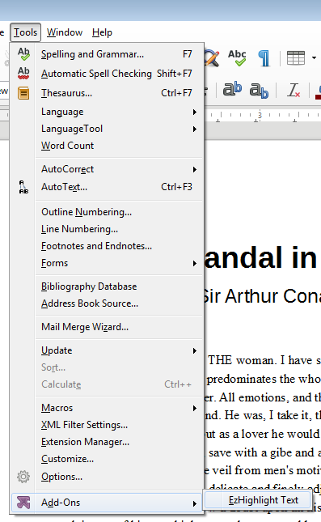
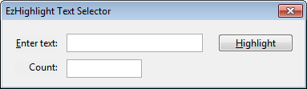
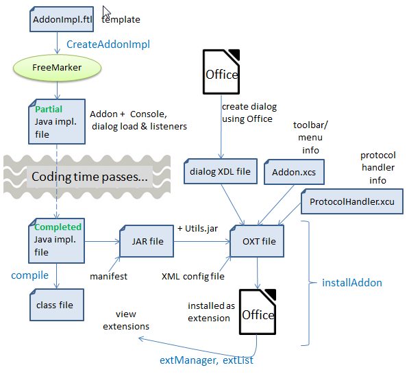
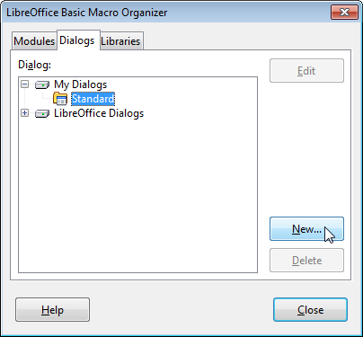
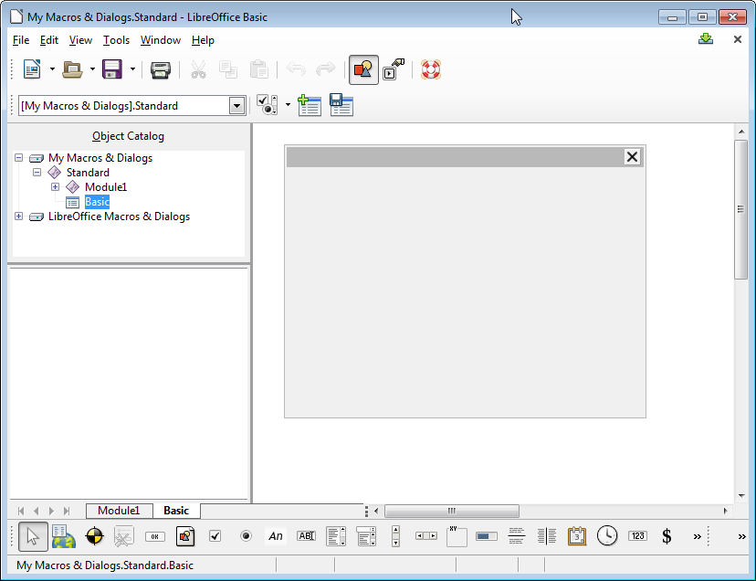
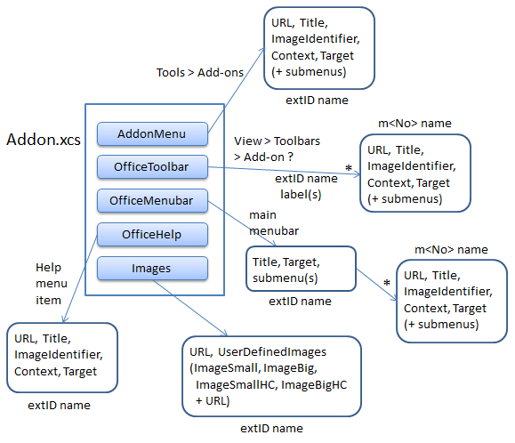

Chapter 46. Add-ons¶
Topics
What is an Add- on?; Creating the EzHighlight Add-on; Creating a Partial Add- on Implementation; The FreeMarker-generated EzHighlightAddonImpl; Creating the Dialog; Configuring the Add-on; Building and Installing the OXT File
Example folders: "AddOn Tests", "Utils"
Add-ons build upon the UNO component techniques described in the last chapter to make a component accessible via an Office menu and/or toolbar item.
I'll implement the EzHighlight add-on, which allows word occurrences to be highlighted in a Writer document. EzHighlight is installed in Office as an extension in the same way as an UNO component, and is listed by the Extension Manger in Figure 1.

Figure 1. The EzHighlight Add-on Extension.
When the Writer application is running, EzHighlight is accessible either through Office's Tools, Add-Ons menu item (see Figure 2) or as a toolbar created by View, Toolbars, Add-on 2 (see Figure 3). This 'floating' toolbar can be attached to an existing toolbar.

Figure 2. The EzHighlight Add-on on the Tools Menu.

Figure 3. The EzHighlighter Add-on as a Toolbar.
When the user clicks on "EzHighlight Text", either through the menu or toolbar, the dialog shown in Figure 4 appears.

Figure 4. The EzHighlighter Dialog.
The user enters a word, and either types
EzHighlight also has basic help support, accessible from Office's Help menu as the "About EzHighlight" item (see Figure 5).

Figure 5. The EzHighlight Help Menu Item.
Clicking on the help item causes a simple message box to appear, as in Figure 6.

Figure 6. The EzHighlight Help Message Box.
1. What is an Add-on?¶
Office supports two kinds of add-on: job add-ons and ProtocolHandler add-ons.
A job add-on is a component triggered by events inside Office, such as when the application is first opened or about to terminate, or when a document is loaded, printed, or closed.
This chapter is about Protocol handler add-ons, which link menu and/or toolbar items to a component using Office's dispatch framework. Every GUI element is assigned a 'command URL', a unique name made of two or three parts:
<protocol string>:<command string>[?<command string argument>+ ]
A protocol string can be almost anything, and I'll be using the extension's ID ("org.openoffice.ezhighlightAddon").
There is a different command string for each GUI-triggered action, and I'll utilize two: "EzHighlight" and "help". "EzHighlight" is associated with the EzHighlight menu and toolbar items (Figures 2 and 3), and makes the dialog in Figure 4 appear. "help" is assigned to the "About EzHighlight" help menu item, and causes the message box in Figure 6 to be displayed.
I won't be using command string arguments.
When a user chooses an item in the user interface, its command URL is passed along a list of dispatch handlers until one accepts the command and processes it by creating a dispatch object. Fortunately, most of the dispatch handling behavior in an add-on can be generated automatically.
The main source of information for job and ProtocolHandler add-ons is chapter 3 of
the Developer's Guide (available at
https://wiki.openoffice.org/w/images/d/d9/DevelopersGuide_OOo3.1.0.pdf), or
online at
https://wiki.openoffice.org/wiki/Documentation/DevGuide/WritingUNO/Integrating_
Components_into_OpenOffice.org and
https://wiki.openoffice.org/wiki/Documentation/DevGuide/WritingUNO/AddOns/Ad
d-Ons (or use loGuide "Integrating Components" and loGuide add-ons).
The Developer's Guide add-on example can be found at http://api.libreoffice.org/examples/DevelopersGuide/examples.html#Components
2. Creating the EzHighlight Add-on¶
There's an overlap between the steps required to create an UNO component and an add-on. The main similarity is the need for an OXT file containing a JAR and a description.xml. However, there's no need for an IDL file or type database (a RDB file), but there are extra details concerning the GUI and dispatch handling.
The main steps in creating an add-on are illustrated by Figure 7.

Figure 7. Toolchain for Creating an Add-on.
The UNO component toolchain in the previous chapter used my skelComp.bat script to generate a partial Java implementation. The script utilizes Office's uno- skeletonmaker which can also be employed to generate add-ons and Calc addins. Unfortunately, I was unable to get its add-on features to work.
This was not a great loss since I'd already been thinking about replacing uno- skeletonmaker with FreeMarker, a powerful template processing library (http://freemarker.org/). FreeMarker can easily duplicate all the features of uno- skeletonmaker, creating a Java class with the boilerplate code for creating a service and handling command URLs. Also, by switching to FreeMarker, I was able to add more automatic code generation, including code for a user input dialog and a debugging window.
The OXT file requires three configuration files: a description of the dialog in Figure 4, Addon.xcs which defines the add-on's GUI (e.g. the menu and toolbar items in Figures 2 and 3), and ProtocolHandler.xcu which says which command URLs are processed by the add-on's dispatch handler.
The toolchain in Figure 7 will be explained in more detail in the rest of this chapter.
3. Creating a Partial Add-on Implementation¶
Figure 8 shows the main elements needed to use the FreeMarker template library: a FTL template file, and a program that instantiates the template by employing a collection of FreeMarker variables and their bindings.

Figure 8. Using FreeMarker.
The simplest FreeMarker program replaces all the FreeMarker variables in the template by their associated bindings, generating a new text file (a Java program in this case). However, FreeMarker contains additional programming features, including for-loops and if-statements, which can generate more complex blocks of text.
The add-on template is stored in addonImpl.ftl, and is processed by CreateAddonImpl.java. It reads in the add-on's name, and initializes a HashMap of three FreeMarker variables called "className", "extensionID, and "cmdNames".
For example, CreateAddonImpl can be called like so:
> run CreateAddonImpl EzHighlight
The three variables are assigned:
- "className" : "EzHighlightAddonImpl"
- "extensionID : "org.openoffice.ezhighlightAddon"
- "cmdNames" : [ "EzHighlight", "help" ]
"className" is assigned the name of the generated Java class. "extensionID" contains the protocol string used by the command URLs. "cmdNames" holds a list of command URL names: "EzHighlight" is linked to the add-on's menu and toolbar items, and "help" is attached to the add-on's help menu item.
CreateAddonImpl outputs a class called EzHighlightAddonImpl, a fully functional
add-on, which displays a dialog like the one in Figure 4 and the help message in
Figure 6. However, after the user has typed
First I'll give an overview of the features in the generated EzHighlightAddonImpl class, then explain the additional highlighting code in a later section.
4. The FreeMarker-generated EzHighlightAddonImpl¶
The template in addonImpl.ftl represents a single Java class, which extends WeakBase and implements seven interfaces:
public class ${className} extends WeakBase implements
XInitialization, XServiceInfo,
XDispatchProvider, XDispatch, // for the add-on
XActionListener, XTopWindowListener,
XKeyListener // for the dialog
{
// ... add-on code
}
WeakBase is the base class used by all components (which includes add-ons and Calc Addins). XServiceInfo and XInitialization handle the creation and initialization of the service at run time.
The XDispatchProvider method, queryDispatch(), implements the dispatch handler for the add-on – it accepts the command URLs associated with the add-on:
// in EzHighlightAddonInpl.java
public XDispatch queryDispatch(URL commandURL,
String targetFrameName, int searchFlags)
{
if (commandURL.Protocol.compareTo(
"org.openoffice.ezhighlightAddon:") == 0) {
if (commandURL.Path.compareTo("EzHighlight") == 0) {
System.out.println("queryDispatch() for \"EzHighlight\"");
return this;
}
if (commandURL.Path.compareTo("help") == 0) {
System.out.println("queryDispatch() for \"help\"");
return this;
}
}
return null;
} // end of queryDispatch()
The handler signals its acceptance of a command URL by returning a dispatch object which Office uses to process the command. EzHighlightAddonImpl also implements the XDispatch interface, so returns a reference to itself. This means that Office calls EzHighlightAddonImpl.dispatch(), passing it the command URL and other properties:
// in EzHighlightAddonInpl.java
public void dispatch(URL commandURL, PropertyValue[] props)
{
if (commandURL.Protocol.compareTo(
"org.openoffice.ezhighlightAddon:") == 0) {
if (commandURL.Path.compareTo("EzHighlight") == 0)
processCmd("EzHighlight");
if (commandURL.Path.compareTo("help") == 0)
processCmd("help");
}
} // end of dispatch()
The template-generated code inside dispatch() distinguishes between the possible command names ("EzHighlight" and "help") by calling processCmd() with different arguments.
If processCmd()'s input argument is "help", then GUI.showMessageBox() is called to display the window shown in Figure 6, while "EzHighlight" triggers the dialog in Figure 4. The processCmd() code is:
// in EzHighlightAddonInpl.java...
// globals
private XDialog dialog = null;
private Console console; // for debugging output
private int printCount = 1;
private void processCmd(String cmd)
{
XComponent doc = Lo.addonInitialize(xcc);
// so my utils can be used safely
System.out.println("Window title: " + GUI.getTitleBar());
System.out.println(printCount++ +
". dispatch() called for \"" + cmd + "\"");
if (cmd.equals("help")) {
GUI.showMessageBox("Add-on Help",
"Type in the text, then press return or
click the Ok button.");
return;
}
// "EzHighlight" is processed by the following code...
console.setVisible(true);
dialog = Dialogs.loadAddonDialog(
"org.openoffice.ezhighlightAddon",
"dialogLibrary/" + cmd + ".xdl");
if (dialog == null) {
System.out.println("Could not load " + cmd + " dialog");
return;
}
XControl dialogControl = Dialogs.getDialogControl(dialog);
initDialog(dialogControl);
Dialogs.execute(dialogControl);
console.setVisible(false);
} // end of processCmd()
Lo.addonInitialize() initializes the globals used by my Lo utility library and other support classes:
// in the Lo class
// globals
private static XComponentContext xcc = null;
private static XDesktop xDesktop = null;
private static XMultiComponentFactory mcFactory = null;
private static XMultiServiceFactory msFactory = null;
public static XComponent addonInitialize(
XComponentContext addonXcc)
{ xcc = addonXcc;
if (xcc == null) {
System.out.println("Could not access component context");
return null;
}
mcFactory = xcc.getServiceManager();
if (mcFactory == null) {
System.out.println("Office Service Manager is unavailable");
return null;
}
try {
Object oDesktop = mcFactory.createInstanceWithContext(
"com.sun.star.frame.Desktop", xcc);
xDesktop = Lo.qi(XDesktop.class, oDesktop);
}
catch (Exception e) {
System.out.println("Could not access desktop");
return null;
}
XComponent doc = xDesktop.getCurrentComponent();
if (doc == null) {
System.out.println("Could not access document");
return null;
}
msFactory = Lo.qi(XMultiServiceFactory.class, doc);
return doc;
} // end of addonInitialize()
addonInitialize() returns an instance of XComponent, which refers to the document currently loaded into Office. Later this will be used to highlight the document's text.
processCmd() calls Console.setVisible() before and after the processing of the "EzHighlight" command. The first call makes a Console debugging window visible, and the call at the end hides it. These lines should be commented out of the completed add-on, so the window doesn't appear.
The dialog is handled by methods from my Dialogs support class, and by listeners set up in initDialog().
5. Creating the Dialog¶
There are two approaches for dialog creation: the easy way uses Office's dialog editor, and the hard way calls functions in my Dialogs support class to programmatically create the dialog's components. I'll use the editor in this chapter, and employ Dialogs methods in my macros in Chapter 48.
The Developer's Guide has some information on the dialog editor in chapter 11, "OpenOffice.org Basic". The relevant sub-sections are online at https://wiki.openoffice.org/wiki/Documentation/DevGuide/Basic/Dialog_Editor and https://wiki.openoffice.org/wiki/Documentation/DevGuide/Basic/Creating_Dialogs (or use loGuide "Dialog Editor" and loGuide "Creating Dialogs").
The editor utilizes drag-and-drop to place GUI elements in a dialog drawing area, with property windows for specializing each element. The editor is reached via Office's menu item Tools > Macros > Organize Dialogs (see Figure 9).

Figure 9. Creating a new Dialog.
Figure 10 shows the dialog editor window after the creation of a new dialog called "Basic"; the GUI controls run along the bottom of the window.

Figure 10. The Dialog Editor Window for a new Dialog.
The simplest useful dialog is probably the version of the "Basic" dialog in Figure 11, consisting of a label, text field, and "Ok" button.

Figure 11. The "Basic" Dialog.
A dialog can be exported as XML using the "Export Dialog" icon above the drawing area (the icon includes a floppy disk which will leave young programmers mystified).
The resulting XDL file contains text something like:
<?xml version="1.0" encoding="UTF-8"?>
<!DOCTYPE dlg:window
PUBLIC "-//OpenOffice.org//DTD OfficeDocument 1.0//EN"
"dialog.dtd">
<dlg:window xmlns:dlg="http://openoffice.org/2000/dialog"
xmlns:script="http://openoffice.org/2000/script"
dlg:id="Basic"
dlg:left="52" dlg:top="44" dlg:width="173" dlg:height="34"
dlg:closeable="true" dlg:moveable="true"
dlg:title="Basic Dialog">
<dlg:styles>
<dlg:style dlg:style-id="0"
dlg:background-color="0xeeeeee"
dlg:font-height="10"/>
</dlg:styles>
<dlg:bulletinboard>
<dlg:text dlg:style-id="0" dlg:id="Label1"
dlg:tab-index="0"
dlg:left="6" dlg:top="11" dlg:width="38" dlg:height="8"
dlg:value="Enter input:"/>
<dlg:textfield dlg:id="TextField1"
dlg:tab-index="1"
dlg:left="41" dlg:top="7" dlg:width="83" dlg:height="14"/>
<dlg:button dlg:id="CommandButton1"
dlg:tab-index="2"
dlg:left="137" dlg:top="9" dlg:width="28" dlg:height="12"
dlg:value="Ok"/>
</dlg:bulletinboard>
</dlg:window>
The code in EzHighlightAddonInpl assumes that the dialog contains a text field called "TextField1" and a button called "CommandButton1", which is true of the XDL shown above. Of course, it's possible to add more GUI components, as in the next section.
5.1. The EzHighlight Dialog¶
The dialog editor has an import icon to the left of the export icon, which can be used to load an XDL file for modification.
I copied the "Basic" XDL file, renaming it to "EzHighlight.xdl", and imported it; a few changes and additions later, it looked as shown in Figure 12.

Figure 12. The EzHighlight.xdl Dialog.
The exported XML is:
<?xml version="1.0" encoding="UTF-8"?>
<!DOCTYPE dlg:window
PUBLIC "-//OpenOffice.org//DTD OfficeDocument 1.0//EN"
"dialog.dtd">
<dlg:window xmlns:dlg="http://openoffice.org/2000/dialog"
xmlns:script="http://openoffice.org/2000/script"
dlg:id="EzHighlight"
dlg:left="109" dlg:top="73" dlg:width="184" dlg:height="44"
dlg:closeable="true" dlg:moveable="true"
dlg:title="EzHighlight Text Selector">
<dlg:styles>
<dlg:style dlg:style-id="0"
dlg:background-color="0xeeeeee"/>
</dlg:styles>
<dlg:bulletinboard>
<dlg:text dlg:style-id="0" dlg:id="Label1"
dlg:tab-index="0"
dlg:left="8" dlg:top="11" dlg:width="26" dlg:height="10"
dlg:value="Enter text:"
dlg:align="right"/>
<dlg:textfield dlg:id="TextField1"
dlg:tab-index="1"
dlg:left="39" dlg:top="9" dlg:width="83" dlg:height="12"/>
<dlg:textfield dlg:id="TextField2"
dlg:tab-index="2"
dlg:left="39" dlg:top="26" dlg:width="46" dlg:height="12"
dlg:readonly="true"/>
<dlg:text dlg:style-id="0" dlg:id="Label2"
dlg:tab-index="3"
dlg:left="8" dlg:top="27" dlg:width="26" dlg:height="10"
dlg:value="Count:"
dlg:align="right"/>
<dlg:button dlg:id="CommandButton1"
dlg:tab-index="4"
dlg:left="131" dlg:top="9" dlg:width="46" dlg:height="12"
dlg:value="Highlight"/>
</dlg:bulletinboard>
</dlg:window>
The dialog loading code in EzHighlightAddonInpl.java assumes that the dialog's filename is the same as the command URL name, as can be seen in processCmd():
// part of processCmd() in EzHighlightAddonInpl.java...
dialog = Dialogs.loadAddonDialog("org.openoffice.ezhighlightAddon",
"dialogLibrary/" + cmd + ".xdl");
processCmd() also assumes that the XDL file is in a dialogLibrary/ sub-directory. I'll explain how this is part of the add-on's OXT file in a later section.
Dialogs.loadAddonDialog() is defined as:
// in the Dialogs class
public static XDialog loadAddonDialog(String extensionID,
String dialogFnm)
{ XDialogProvider dp =
Lo.createInstanceMCF(XDialogProvider.class,
"com.sun.star.awt.DialogProvider");
if (dp == null) {
System.out.println("Could not access the Dialog Provider");
return null;
}
try {
return dp.createDialog("vnd.sun.star.extension://" +
extensionID + "/" + dialogFnm);
}
catch (java.lang.Exception e) {
System.out.println("Could not load the dialog: \"" +
dialogFnm + "\": " + e);
return null;
}
} // end of loadAddonDialog()
The crucial line is the call to XDialogProvider.createDialog(), which constructs the dialog name:
vnd.sun.star.extension://org.openoffice.ezhighlightAddon/
dialogLibrary/EzHighlight
The dialog is loaded from the ezhighlightAddon extension.
5.2. Listening to the Dialog¶
Back in processCmd(), listeners are attached to the loaded dialog, and the dialog is made visible on-screen:
// in processCmd() in EzHighlightAddonInpl.java...
XControl dialogControl = Dialogs.getDialogControl(dialog);
initDialog(dialogControl);
Dialogs.execute(dialogControl);
Dialogs.getDialogControl() casts the XDialog into an XControl:
// in the Dialogs class
public static XControl getDialogControl(XDialog dialog)
{ return Lo.qi(XControl.class, dialog); }
The initDialog() method inside EzHighlightAddonInpl.java attaches three listeners to the dialog: a window listener, an action listener for the "CommandButton1" button, and a key listener for the "TextField1" text field:
// in the EzHighlightAddonInpl class
// globals
private XTextComponent textBox;
// the text in the dialog's text field
private void initDialog(XControl dialogControl)
{
// listen to the dialog window
XTopWindow topWin = Dialogs.getDialogWindow(dialogControl);
topWin.addTopWindowListener(this);
// Dialogs.showControlInfo(dialogControl);
// set listener for Ok button
XButton button = Lo.qi(XButton.class,
Dialogs.findControl(dialogControl, "CommandButton1"));
button.addActionListener(this);
// set listener for text box
textBox = Lo.qi(XTextComponent.class,
Dialogs.findControl(dialogControl, "TextField1"));
XWindow xTFWindow = (XWindow) Lo.qi(XWindow.class, textBox);
xTFWindow.addKeyListener(this);
xTFWindow.setFocus();
} // end of initDialog()
These controls and listeners are all from Office's com.sun.star.awt module. The dialog and listeners will be invoked by Office at run time, and so should use its API, not Java's Swing.
The call to Dialogs.showControlInfo() is commented out in initDialog(), but is a useful way to double-check the dialog's internal construction, and particularly the IDs of its components. showControlInfo() prints to standard output which will be displayed in the Console window. Figure 13 reports the structure of the EzHighlight.xdl dialog from Figure 12.

Figure 13. The Console Window Showing Dialog Details.
The dialog contains five components: two labels, two text fields, and a button.
Dialogs.findControl() uses a control's name to find it inside a dialog:
// in Dialogs class
public static XControl findControl(XControl dialogCtrl,
String name)
{ XControlContainer ctrlCon =
Lo.qi(XControlContainer.class, dialogCtrl);
return ctrlCon.getControl(name);
}
initDialog() converts the returned "CommandButton1" control into an XButton, and the "TextField1" control into an XTextComponent so that listeners can be attached to them.
EzHighlightAddonInpl implements all of the listener interfaces used by the dialog:
XActionListener, XTopWindowListener, and XKeyListener.
XActionListener.actionPerformed() deals with button presses,
XTopWindowListener.windowClosing() listens for the closing of the dialog, and
XKeyListener.keyPressed() captures the user typing
// in the EzHighlightAddonInpl class
// globals
private XDialog dialog = null;
private XTextComponent textBox;
public void actionPerformed(ActionEvent e)
{
String info = textBox.getText();
if (info.equals(""))
return;
System.out.println("Info: \"" + info +"\"");
textBox.setText("");
// ADD code here
} // end of actionPerformed()
public void windowClosing(EventObject event)
{ dialog.endExecute(); }
public void keyPressed(KeyEvent event)
{
if (event.KeyCode == Key.RETURN) {
String info = textBox.getText();
if (info.equals(""))
return;
System.out.println("Info: \"" + info +"\"");
textBox.setText("");
// ADD code here
}
} // end of keyPressed()
The template generated code for actionPerformed() and keyPressed() only print information to the Console window. Add-on specific functionality is added next.
6. Completing the Implementation of EzHighlightAddonInpl¶
The completion of EzHighlightAddonInpl.java takes the form of new code in processCmd(), initDialog(), actionPerformed(), and keyPressed(), and a few new global variables.
processCmd() converts the XComponent document returned by Lo.addonInitialize() into an XTextDocument, assuming that the currently loaded document is text-based. If it isn't then there's no point continuing:
// in the EzHighlightAddonInpl class
// globals
private XTextDocument textDoc;
// in processCmd()
:
XComponent doc = Lo.addonInitialize(xcc);
// added
textDoc = Write.getTextDoc(doc);
if (textDoc == null)
return;
:
initDialog() is extended to access the word count text field. It's only used to report the number of changes, so doesn't need a listener:
// in the EzHighlightAddonInpl class
// globals
private XTextComponent countTextBox;
// in initDialog()
:
// get a reference to the count text field; added
countTextBox = Lo.qi(XTextComponent.class,
Dialogs.findControl(dialogControl, "TextField2"));
:
actionPerformed() and keyPressed() must trigger the highlighting code, which is implemented in applyEzHighlighting():
// added to actionPerformed()
:
int count = applyEzHighlighting(info);
countTextBox.setText(""+count);
// added to keyPressed()
:
int count = applyEzHighlighting(info);
countTextBox.setText(""+count);
applyEzHighlighting() is passed the text entered by the user through the dialog. It uses the XReplaceable and XReplaceDescriptor interfaces to perform a search and replace through the document. This technique, and very similar code, was explained in Chapter 9. applyEzHighlighting() is:
// in the EzHighlightAddonInpl class
// globals
private XTextDocument textDoc;
private int applyEzHighlighting(String searchKey)
/* Matches whole words and is case sensitive.
Highlights in bold and red; */
{
System.out.println("applyEzHighlighting(): " + searchKey);
XReplaceable repl = Lo.qi(XReplaceable.class, textDoc);
XReplaceDescriptor desc = repl.createReplaceDescriptor();
/* Get a XPropertyReplace object for altering the properties
of the replaced text */
XPropertyReplace propReplace = Lo.qi(XPropertyReplace.class, desc);
// Set the replaced text to bold and red
PropertyValue wv = new PropertyValue("CharWeight", -1,
FontWeight.BOLD, PropertyState.DIRECT_VALUE);
PropertyValue cv = new PropertyValue("CharColor", -1,
Color.RED.getRGB(), PropertyState.DIRECT_VALUE);
PropertyValue[] props = new PropertyValue[] {cv, wv};
try {
propReplace.setReplaceAttributes(props);
// Only match whole words and be case sensitive
desc.setPropertyValue("SearchCaseSensitive", true);
desc.setPropertyValue("SearchWords", true);
}
catch (com.sun.star.uno.Exception ex) {
System.out.println("Error setting up search properties");
return -1;
}
/* Replaces all instances of searchKey with new Text properties
and gets the number of changed instances */
desc.setSearchString(searchKey);
desc.setReplaceString(searchKey);
return repl.replaceAll(desc);
} // end of applyEzHighlighting()
7. Configuring the Add-on¶
An add-on OXT file requires two configuration files not used by an UNO component: ProtocolHandler.xcu and Addon.xcs.
7.1. ProtocolHandler.xcu¶
ProtocolHandler.xcu specifies which command URLs will be handled by the component. The contents of the file for EzHighlight are:
<?xml version='1.0' encoding='UTF-8'?>
<oor:component-data oor:name="ProtocolHandler"
oor:package="org.openoffice.Office"
xmlns:oor="http://openoffice.org/2001/registry"
xmlns:xs="http://www.w3.org/2001/XMLSchema"
xmlns:xsi="http://www.w3.org/2001/XMLSchema-instance">
<node oor:name="HandlerSet">
<node oor:name="EzHighlightAddonImpl" oor:op="replace">
<prop oor:name="Protocols" oor:type="oor:string-list">
<value>org.openoffice.ezhighlightAddon:*</value>
</prop>
</node>
</node>
</oor:component-data>
The "EzHighlightAddonImpl" component will handle all command URLs that begin with the "org.openoffice.ezhighlightAddon" extension ID. The "all" is specified using the * wildcard. The component name is the name of the generated Java class.
7.2. Addon.xcs¶
Addon.xcs defines the add-on's GUI elements, such as its menu and toolbar items (i.e. as seen in Figures 2, 3, and 5). Figure 14 illustrates how the file may set up to five attributes:

Figure 14. The Addon.xcs GUI Elements.
The "AddonMenu" attribute defines the look of the menu item that appears at the end of Office's Tool > Add-ons menu, as in Figure 2.
The "OfficeToolbar" attribute specifies the appearance of the floating toolbar reached
via View > Toolbars > Add-on
The "OfficeMenubar" attribute is used to add a menu item to Office's main menu bar, which seems a rather poor GUI design choice, so I've chosen not to use it.
The OfficeHelp" attribute creates the add-on's help menu item on Office's Help menu, as in Figure 5.
The "Images" attribute defines the icons that appear next to the text in the menu and toolbar items. If you look back at Figures 2 and 3, you'll see that no icons appear, but this isn't for want of me trying. This feature seems to be broken, but I'll still explain how to set it up.
Aside from "Images", the attributes have a similar structure: a menu or toolbar item with five sub-attributes: URL, Title, ImageIdentifier, Context, and Target; I'll not be using sub-menu attributes.
The best explanation of Addon.xcs' structure is "How to distribute your macros with an Addon" by Bernard Marcelly at http://www.openoffice.org/documentation/HOW_TO/various_topics/Addons1_1en.pdf, which dates from 2003.
"AddonMenu" Attribute¶
The "AddonMenu" attribute used by the EzHighlight add-on is:
<node oor:name="AddonMenu">
<node oor:name="org.openoffice.ezhighlightAddon"
oor:op="replace">
<prop oor:name="URL" oor:type="xs:string">
<value>org.openoffice.ezhighlightAddon:EzHighlight</value>
</prop>
<prop oor:name="Title" oor:type="xs:string">
<value>EzHighlight Text</value>
</prop>
<prop oor:name="ImageIdentifier" oor:type="xs:string">
<value/>
</prop>
<prop oor:name="Context" oor:type="xs:string">
<value>com.sun.star.text.TextDocument</value>
</prop>
<prop oor:name="Target" oor:type="xs:string">
<value>_self</value>
</prop>
</node>
</node>
The "URL" attribute holds the command URL which is dispatched by Office when the menu item is clicked.
The "Title" attribute contains the menu item's text, and "ImageIdentifier" can be assigned the path to a PNG or BMP file for the text's icon. "ImageIdentifier" is left empty here since all the images are defined in the "Images" attribute, explained below.
The "Context" attribute is assigned the document service for the Office application utilizing the add-on. EzHighlight is accessible only from Writer, so "Context"'s value is "com.sun.star.text.TextDocument". Other application/service mappings are shown in Table 1.
| Office Application | Document Service |
|---|---|
| Writer | com.sun.star.text.TextDocument |
| Calc | com.sun.star.sheet.SpreadsheetDocument |
| Impress | com.sun.star.presentation.PresentationDocument |
| Draw | com.sun.star.drawing.DrawingDocument |
| Formula | com.sun.star.formula.FormulaProperties |
| Chart | com.sun.star.chart.ChartDocument |
| Bibliography | com.sun.star.frame.Bibliography |
Table 1. Office Application/Service Mappings Used by "Context"
If the "Context" field isn't assigned a value, then the add-on will be available in all of Office's applications.
The "Target" field can be assigned four values: "_top", "_parent", "_blank", and "_self", but I've never seen any other value used but "_self".
"OfficeToolbar" Attribute¶
Figure 2 (EzHighlight's menu item) and Figure 3 (its toolbar item) look the same, and respond in the same way when clicked, so it's no great surprise that the "OfficeToolbar" attribute in Addon.xcs is almost exactly the same as "AddonMenu":
<node oor:name="OfficeToolBar">
<node oor:name="org.openoffice.ezhighlightAddon"
oor:op="replace">
<node oor:name="m1" oor:op="replace">
<prop oor:name="URL" oor:type="xs:string">
<value>org.openoffice.ezhighlightAddon:EzHighlight</value>
</prop>
<prop oor:name="Title" oor:type="xs:string">
<value>EzHighlight Text</value>
</prop>
<prop oor:name="ImageIdentifier" oor:type="xs:string">
<value/>
</prop>
<prop oor:name="Context" oor:type="xs:string">
<value>com.sun.star.text.TextDocument</value>
</prop>
<prop oor:name="Target" oor:type="xs:string">
<value>_self</value>
</prop>
</node>
</node>
</node>
The difference is an extra
"OfficeHelp" Attribute¶
The "OfficeHelp" attribute is similar to "OfficeToolbar" and "AddonMenu", but dispatches a different command URL ("org.openoffice.ezhighlightAddon:help") and its menu item uses a different title ("About EzHighlight").
<node oor:name="OfficeHelp">
<node oor:name="org.openoffice.ezhighlightAddon"
oor:op="replace">
<prop oor:name="URL" oor:type="xs:string">
<value>org.openoffice.ezhighlightAddon:help</value>
</prop>
<prop oor:name="Title" oor:type="xs:string">
<value xml:lang="en-US">About EzHighlight</value>
</prop>
<prop oor:name="ImageIdentifier" oor:type="xs:string">
<value/>
</prop>
<prop oor:name="Context" oor:type="xs:string">
<value>com.sun.star.text.TextDocument</value>
</prop>
<prop oor:name="Target" oor:type="xs:string">
<value>_self</value>
</prop>
</node>
</node>
"Images" Attribute¶
The "Images" attribute specifies the icons used by the GUI elements. An image can be either big or small (26x26 or 16x16 pixels), high contrast or normal, and loaded from a file or coded as hexadecimal text. These different combinations mean there are eight variants to choose from, each with a different property name, which are listed in Table 2.
| Size in Pixels | Contrast | Hexadecimal text | File name |
|---|---|---|---|
| 16x16 | normal | ImageSmall | ImageSmallURL |
| 16x16 | high | ImageSmallHC | ImageSmallHCURL |
| 26x26 | normal | ImageBig | ImageBigURL |
| 26x26 | high | ImageBigHC | ImageBigHCURL |
Table 2. Image Property Names.
The "Images" attribute for EzHighlight is:
<node oor:name="Images">
<node oor:name="org.openoffice.ezhighlightAddon"
oor:op="replace">
<prop oor:name="URL" oor:type="xs:string">
<value>org.openoffice.ezhighlightAddon:EzHighlight</value>
</prop>
<node oor:name="UserDefinedImages">
<prop oor:name="ImageSmallURL">
<value>%origin%/images/ezhighlight16.png</value>
</prop>
<prop oor:name="ImageBigURL">
<value>%origin%/images/ezhighlight26.png</value>
</prop>
</node>
</node>
</node>
The "UserDefinedImages" sub-attribute specifies two sizes of normal contrast image, supplied as filenames. %origin% stands for the OXT file, so the two icons are stored in the images/ subdirectory inside that zipped file.
The images will be used for the menu and toolbar items associated with the "org.openoffice.ezhighlightAddon:EzHighlight" command URL. Unfortunately, the images don't appear, as shown in Figures 2 and 3.
The hexadecimal text definition of a small image would be something like:
<prop oor:name="ImageSmall">
<value>89504E470D0A1A0A0000000D494844520000001000000
01008060000001FF3FF610000024F494 ... // more numbers
</value>
</prop>
One way to obtain an image's hexadecimal text is to call my ImageHex.java program which prints it to stdout. Unfortunately, the icon still doesn't appear, even when specified in this form.
8. Building and Installing the OXT File¶
Figure 7 shows the stages in building and installing the add-on as an extension. These steps are carried out by my installAddon.bat script, which assumes that the various configuration files have already been created and are in certain locations.
The completed EzHighlightAddonImpl.java file is compiled, then added to EzHighlight.jar with a manifest that refers to Utils.jar:
RegistrationClassName: EzHighlightAddonImpl
Class-Path: Utils.jar
Utils.jar contains my support classes, which may be required by the add-on at run- time. installAddon.bat will add it to the OXT file along with EzHighlight.jar.
installAddon.bat assumes that the add-on configuration files are in a sub-directory with the same name as the add-on. For example, when it's processing the EzHighlight add-on, it looks for a EzHighlight/ folder with the following structure:
EzHighlight
| Addons.xcu
| description.xml
| license.txt
| package-description.txt
| ProtocolHandler.xcu
| Utils.jar
|
+---dialogLibrary
| EzHighlight.xdl
|
+---images
| ezhighlight.png
| ezhighlight16.png
| ezhighlight26.png
|
\---META-INF
manifest.xml
EzHighlight.jar is moved into EzHighlight/, and the folder is zipped into EzHighlight.oxt. The extension is installed into Office using the unopkg tool, in the same way as the UNO component of the last chapter.
EzHighlight/ contains three configuration files: ProtocolHandler.xcu, Addons.xcu, and description.xml. description.xml plays the same role as the same-named file for UNO components. Its contents use the same XML attributes:
<?xml version="1.0" encoding="UTF-8"?>
<description
xmlns="http://openoffice.org/extensions/description/2006"
xmlns:d="http://openoffice.org/extensions/description/2006"
xmlns:xlink="http://www.w3.org/1999/xlink">
<identifier value="org.openoffice.ezhighlightAddon"/>
<version value="0.1"/>
<display-name>
<name lang="en">EzHighlight Addon</name>
</display-name>
<publisher>
<name xlink:href="http://fivedots.coe.psu.ac.th/~ad/jlop/"
lang="en">Andrew Davison</name>
</publisher>
<registration>
<simple-license accept-by="user" >
<license-text xlink:href="license.txt" lang="en"/>
</simple-license>
</registration>
<extension-description>
<src lang="en-US" xlink:href="package-description.txt"/>
</extension-description>
<icon>
<default xlink:href="images/ezhighlight.png" />
</icon>
<update-information>
<src xlink:href="http://fivedots.coe.psu.ac.th/~ad/jlop/"/>
</update-information>
<dependencies>
<OpenOffice.org-minimal-version value="3.4"
d:name="OpenOffice.org 3.4"/>
</dependencies>
<platform value="all" />
</description>
The biggest difference is that the extension icon is located in the images/ subdirectory inside EzHighlight/. license.txt and package-description.txt are referenced in the description, which explains why those files are in EzHighlight/.
The dialog description (EzHighlight.xdl) is stored in its own subdirectory, dialogLibrary/, to match the dialog loading code in EzHighlightAddonInpl.java:
// in processCmd()
dialog = Dialogs.loadAddonDialog("org.openoffice.ezhighlightAddon",
"dialogLibrary/" + cmd + ".xdl");
The images/ subdirectory contains the extension manager icon (ezhighlight.png) and two sizes of GUI icons (ezhighlight16.png and ezhighlight26.png). The GUI icons must be inside images/ to match the locations specified in the "Images" attribute in Addon.xcs.